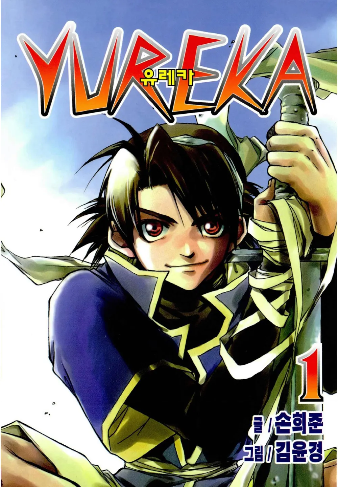
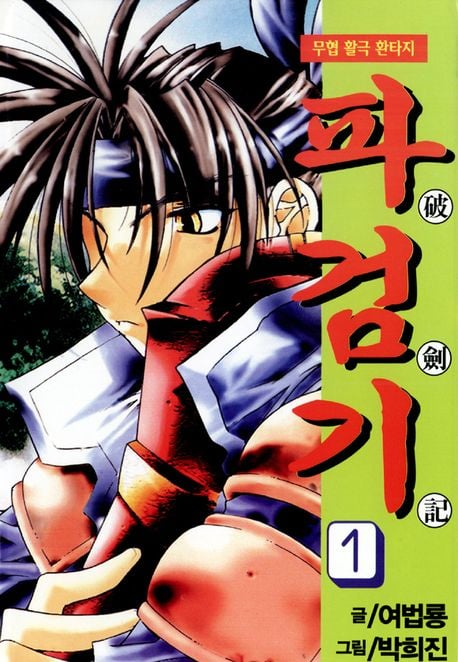
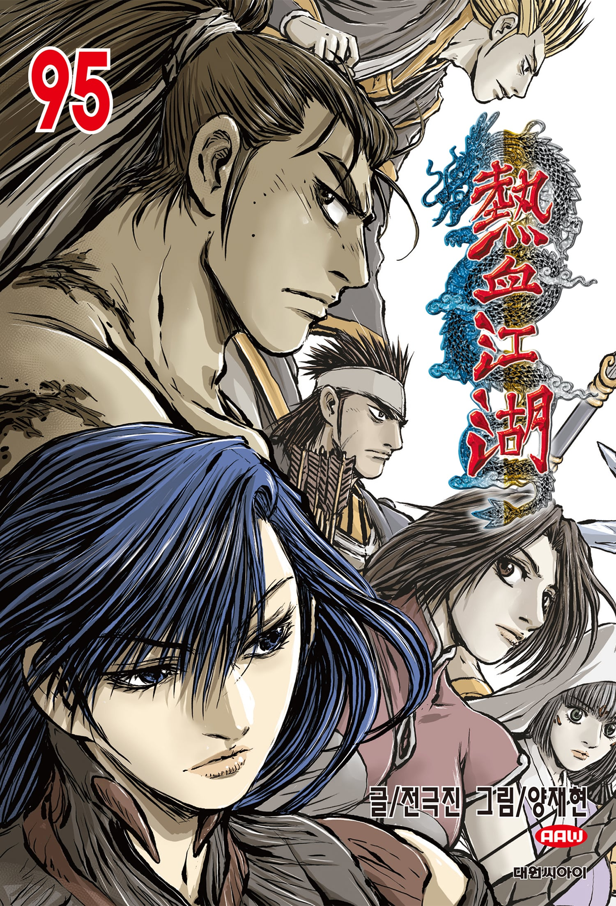
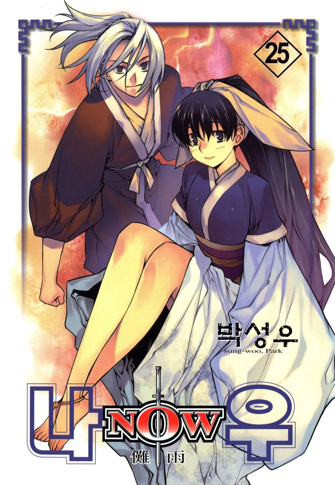

이때 학교끝나고 책방가서
신간있으면 기분좋았음
대여료 백원하던시절




이때 학교끝나고 책방가서
신간있으면 기분좋았음
대여료 백원하던시절
저 시대는 틀 이 아니야..
붉은매 정도는 되야지
얼레리꼴레리 얼렐레~
나우 작가 차기작도 재밌었음.. 전작의 주인공들이 엄마아빠로 나와서 주인공들 도와주더라
나우가 천랑열전 주인공들이 나와 도와주는거아닌가
아이씨 반대였구나 고맙다
나우만 안봤어도..
파검기 재밌었는데 장기 연재하면서 산으로 가다가 가다가 완결난 느낌
헤비메탈6 어디감
짱 체인지가이 삐따기 핫도그
그나마 무난하게 끝낸게 나우 하나 정도인가.
유레카는 2부 가면서 노잼됐고 파검기는 후반부 조졌고
그나마 저시절 만화중에서 준수하게 끝난건 웨스턴 샷건 정도인거 같은데
대여료 300원 아님?
그러게 나도 IMF로 정부에서 저작권 무시하고 책대여점 밀어줄 때부터 봤는데 100원은.. 저 작품들 보다 훨씬 이전 세대 만화방 대본소 유행할때 아닌가?
내가 나우보고 발페티시가 생김;;;
유레카는 무난하게 게임이얘기나 하면 좋았을걸
가상현실 살인 해커 나오고 이러니까 재미가 없더라
난 신구미호랑 ,힙합 재밌게본듯
전부 일곱개의 숟가락 미만잡임
책방이란게 처음 생겼을때부터 이용했는데
내 기억에 대여료 백원시절은 없었다
만화 300 소설 700이야
그리고 그 시절만화는 지금 올린 만화보다 전 세대임
옛날에 300하다가 경쟁심해지면서 책방 프랜차이즈들어설때 권당 100 으로 좆나치열해졌었음 대충 2005~8년때쯤인듯
그래? 우리동네엔 그런거 없었는데
아무리 옛날이라도 100원이라니
당시에 만화책이 3000~4000원정도 했던거같은데
비디오랑 디비디도 같이함. 가던책방은 권당 500 800으로 올랐는데 100원인곳이 멀어도 무조건 100으로갔음.
진짜가면 열권씩 빌림.
이드가 없네
저 작품들도 재밌었고 웨스턴 샷건이 막 엄청 재밌지는 않았는데 문득문득 기억나는 작품으로 남아있음ㅋㅋㅋ
유레카 1부-겜돌이들의 정식 서비스인줄 알고 하던 게임이 오베였던건에 대하여
2부-캐릭터 복제 기술과 기기의 허점을 이용한 살인범 추리게임
3부-복제 캐릭터가 성장하는 ai라서 온갖 잡놈들 다 붙는 와중 내 캐릭터 겸 히로인 캐릭터 지키기
엔딩-주인공은 존예 여친이랑 현생살게 되고 친구놈들은 내 ai랑 겜창인생 계속하기
파검기 개재밋게 봤는데 후.... 세계관이나 설정 잘 짜놓고 마지막에 찍쌈..요즘 그 작가들 끼리 현대인이 무림에서 어쩌고 웹툰 그리던데 작화는 말할거 없이 귯인데 스토리가 우주로 넘어감